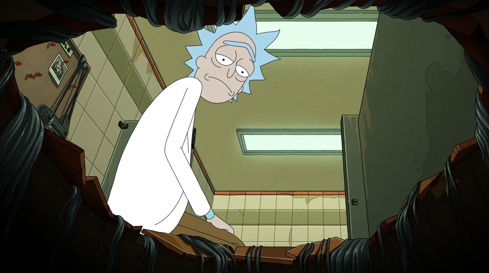

You start running through the what ifs. Notice the absurdity the worst case scenario hasn't happened yet, but you're already preparing your response to it.
That's what I call Fear Hell, or as we all know Desperation everyone wants things badly. Desperation is wanting something while simultaneously rehearsing its loss in real time, and the rehearsal is never neutral. It changes how you stand. It changes your timing. It changes what comes out of your mouth first. And the person on the other side of that door — or that interview table, or that group chat — can read it, even if they couldn't tell you what they're reading.
I think of desperation as running through a tunnel toward a light at the end. That light is the outcome you're desperate to reach. But the longer you run, the more your brain starts staring at the walls instead of the destination.
And eventually, without noticing, you start moving the destination.
You begin behaving as though the worst-case scenario is already inevitable. You overcompensate. You explain too much. You offer too much. You try to physically control an outcome that was never yours to control in the first place.
And underneath that there's other people pick up on before you're consciously aware your sitiutation. Neediness is very distinguishable than Confidence, and faking your situation and pretending that thing is not matter to you by your justification and over-explaination make it easy to tell what is going on.
The pattern doesn't change:
You want the position, the offer, the seat at the table, so you walk in negotiating against yourself before anyone else even gets the chance. You hedge the pitch, lower the ask, pre-discount your own value, then act surprised when you get exactly the smaller outcome you were mentally preparing to accept. Congratulations, you successfully defended yourself from a rejection that never happened.
You want the skill, the result, the thing you've been grinding toward, so you rush it. You skip the boring repetitions that actually build competence, cut corners because you need proof now, and ship something half-baked just to have something to point at. Then it fails, and you call it evidence that you weren't capable, conveniently ignoring that anxiety was the one holding the scissors.
And you want to prove something to yourself: that you're sharp enough, disciplined enough, actually built for this. So every setback stops being information and starts becoming a court ruling. You avoid the risks that could produce the proof because failing would feel like confirmation of the fear. Eventually, "playing it safe" becomes quitting with better PR.
The annoying part is that the thing you're afraid of often isn't waiting at the end of the road. You're quietly constructing it along the way.
Same shape, every time: fear of an ending → a behavior shift you don't fully notice → the exact ending you feared, self-installed.
I want to mention an episode from Rick and Morty "Fear no Mort" as it was an inspiration for me to write this blog post, cuz seeing it from a reality prespective, the one can't relate more and if you connect the dots, you will clearly see that the fear hole is the same as desperation.
The premise: a hole that shows you your greatest fear, and the only way out is to let the fear "feed on you" — you have to trigger it yourself, on purpose, faster than it can ambush you. Watch it and you'll notice it's not really a metaphor at that point, it's a documentary. The character most afraid of an outcome becomes the one constructing it, with his own hands, while telling himself he's just trying to survive it.
tldr; about the episode if you don't care, the actual point here is it turns out Rick was never even in the hole with him. Morty's real fear wasn't rejection in general — it was that Rick didn't think he was irreplaceable. Which is the part that actually applies here: half the time, desperation isn't fear of the event. It's fear of what the event would confirm about how much you matter to someone. That's why it feels so disproportionate to the actual stakes — because it was never really about the stakes.
The way out isn't care less. That's an advice from a naive person. It's noticing that you've quietly outsourced your sense of okay-ness to something that hasn't happened yet, and pulling that back before you walk in — not because the outcome doesn't matter, but because you can't afford to let it drive.
So you're standing outside the door again. Same door, same thirty seconds. The only thing that's changed is you're no longer pre-writing the apology.

Finished at Tue, Aug 18.2026